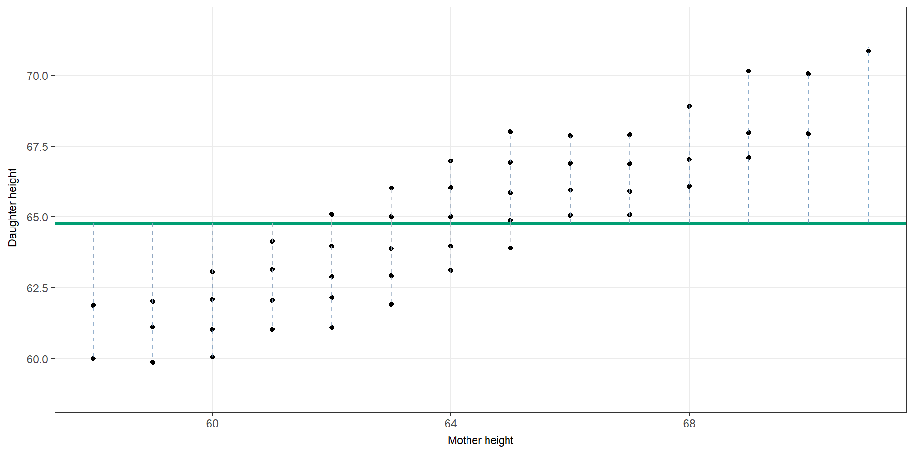
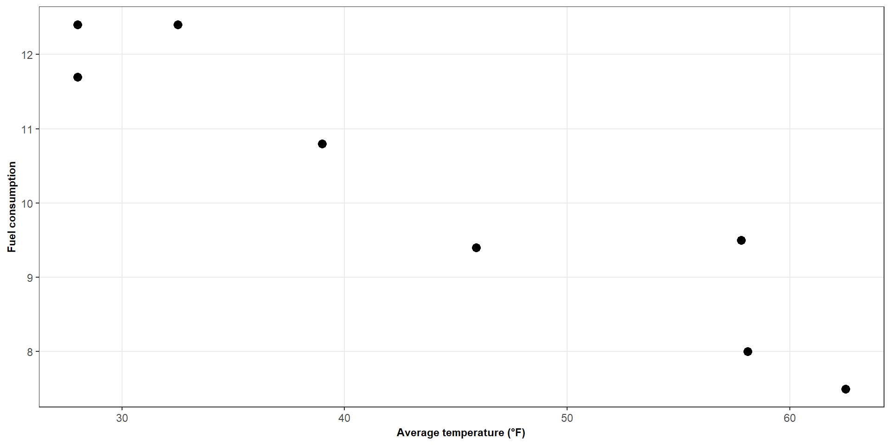
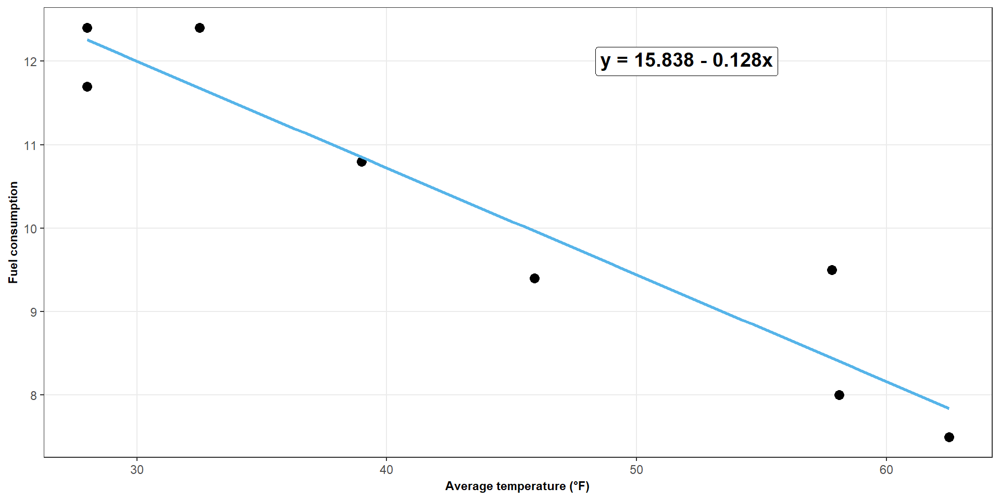
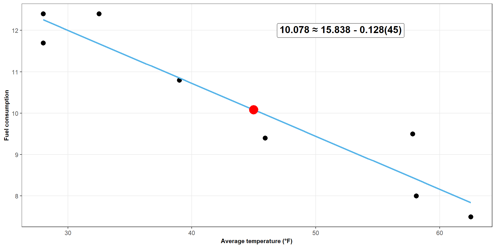
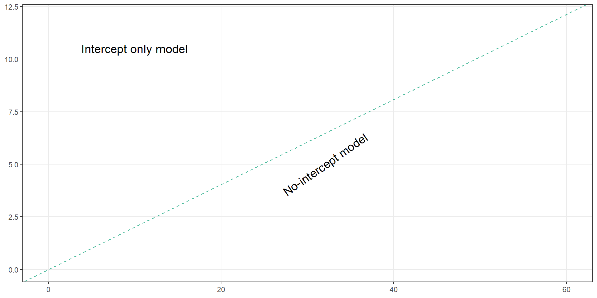

| Temperature | Fuel |
|---|---|
| 28.0 | 12.4 |
| 28.0 | 11.7 |
| 32.5 | 12.4 |
| 39.0 | 10.8 |
| 45.9 | 9.4 |
| 57.8 | 9.5 |
| 58.1 | 8.0 |
| 62.5 | 7.5 |
ST303 - Linear Models
Earlier today we asked:
What is the “best” line?
And we decided that the best line is the one that
Minimises the sum of squared residuals
\[ \sum_{i=1}^{n}\epsilon_i^2 \]
Now, we’ll be asking how do we actually find that line?
Suppose our regression line is
\[ \hat{y_i} = \beta_0 + \beta_1x_i + \epsilon \]
Find the values of \(\beta_0\) and \(\beta_1\) that give the smallest possible residual
\[ \begin{align*} S(\beta_0, \beta_1) &= \sum^n_{i = 1} \epsilon_i^2 \\[4pt] &= \sum^n_{i = 1} (y_i - \hat{y_i})^2 \\[4pt] &= \boxed{\sum^n_{i = 1} (y_i - \beta_0 - \beta_1x_i)^2} \end{align*} \]
Becomes an optimisation problem
\[ \boxed{S(\beta_0, \beta_1) = \sum^n_{i = 1} (y_i - \beta_0 - \beta_1x_i)^2} \]
There are infinitely many possible values of \(\beta_0\) and \(\beta_1\).
Each combination gives us a different line.
Each line gives us different residuals.
Each set of residuals gives us a different value of \(\beta_0\) and \(\beta_1\)
We want the values of \(\beta_0\) and \(\beta_1\) that make \(S\) as small as possible.

Figure 1: Interactive demonstration of how different slopes affect the candidate line and residuals. Watch how the dashed lines (residuals) change as the line changes.
We want to find the line that gives the smallest possible sum of squared errors.
There are two things we can change: \[ \boxed{\beta_0 = \text{intercept}} \qquad \boxed{\beta_1 = \text{slope}} \]
What values of \(\beta_0\) and \(\beta_1\) give us the minimum error?
Using calculus, we can find the point where changing either the intercept or slope would no longer reduce the error:
\[ \frac{\partial S}{\partial \beta_0}=0 \qquad \frac{\partial S}{\partial \beta_1}=0 \]
\[ \boxed{S(\beta_0, \beta_1) = \sum^n_{i = 1} (y_i - \beta_0 - \beta_1x_i)^2} \]
\[ \frac{\partial S}{\partial \beta_0} = -2 \sum^n_{i = 1} (y_i - \beta_0 - \beta_1x_i) \\[8pt] \sum^n_{i = 1} (y_i - \hat{\beta_0} - \hat{\beta_1}x_i) = 0 \\[8pt] \sum y_i - n\hat{\beta_0} - \hat{\beta_1}\sum x_i = 0 \\[8pt] \bar{y} - \hat{\beta_0} - \hat{\beta_1}\bar{x} = 0 \\[8pt] \boxed{\hat{\beta_0} = \bar{y} - \hat{\beta_1}\bar{x}} \]
The OLS regression line always passes through \((\bar{x},\bar{y})\).
\[ \boxed{S(\beta_0, \beta_1) = \sum^n_{i = 1} (y_i - \beta_0 - \beta_1x_i)^2} \]
\[ \frac{\partial S}{\partial \beta_0} = -2\sum^n_{i = 1} x_i (y_i - \beta_0 - \beta_1x_i) \\[4pt] \sum^n_{i = 1} x_i (y_i - \hat{\beta_0} - \hat{\beta_1}x_i) = 0 \\[4pt] \]
\[ \sum^n_{i = 1} x_i (y_i - {\color{blue}\bar{y} - \hat{\beta_1}\bar{x}} - \hat{\beta_1}x_i) = 0 \\[4pt] \sum^n_{i=1}(x_i - \bar{x})(y_i - \bar{y}) = \hat{\beta_1}\sum^n_{i=1}(x_i - \bar{x})^2 \\[4pt] \boxed{\hat{\beta_1} = \frac{\sum^n_{i=1}(x_i - \bar{x})(y_i - \bar{y})}{\sum^n_{i=1}(x_i - \bar{x})^2}} \]
To make this things a little easier to work with, we can define:
\[ S_{xx} = \sum_{i=1}^{n}(x_i-\bar x)^2 \qquad S_{xy} = \sum_{i=1}^{n}(x_i-\bar x)(y_i-\bar y). \]
Therefore, our derived equations become
\[ \boxed{\hat{\beta_0} = \bar{y} -\hat{\beta_1} \bar{x}} \qquad \boxed{\hat{\beta_1} = \frac{S_{xy}}{S_{xx}}} \]
At the end of the day, we just need to calculate some means!
Eight office complexes were observed over one week. We recorded average temperature and fuel consumption.
| Temperature | Fuel |
|---|---|
| 28.0 | 12.4 |
| 28.0 | 11.7 |
| 32.5 | 12.4 |
| 39.0 | 10.8 |
| 45.9 | 9.4 |
| 57.8 | 9.5 |
| 58.1 | 8.0 |
| 62.5 | 7.5 |

Figure 2: Scatter plot showing the relationship between temperature and fuel consumption
What do you expect the slope for this data to be?
OLS.R
# Deriving beta 0 and beta 1 using a small dataset -----------------------------
# Create a small fuel dataset
fuel <- dplyr::tibble(
temp = c(28, 28, 32.5, 39, 45.9, 57.8, 58.1, 62.5),
fuel = c(12.4, 11.7, 12.4, 10.8, 9.4, 9.5, 8, 7.5)
)
# Get our means ----------------------------------------------------------------
x_bar <- mean(fuel$temp)
y_bar <- mean(fuel$fuel)
# Get S_xx ---------------------------------------------------------------------
s_xx <- (fuel$temp - x_bar)^2 |> sum()
# Get S_xy ---------------------------------------------------------------------
s_xy <- ((fuel$temp - x_bar) * (fuel$fuel - y_bar)) |> sum()
# Now we can find beta 1 (S_xy / S_xx) -----------------------------------------
beta_1 <- s_xy / s_xx
# And then we can find beta 0 (y_bar - beta_1 * x_bar) --------------------------
beta_0 <- y_bar - (beta_1 * x_bar)
beta_0 # 15.838
beta_1 # -0.128
# Thus our regression becomes: y = 15.838 - 0.128xCalculate \(\bar{x}\) and \(\bar{y}\)
\[ \bar{x} = 43.975 \qquad \bar{y} = 10.2125 \]
Calculate \(S_{xx}\)
\[ S_{xx} = \sum^n_{i = 1} (x_i - \bar{x}) ^2 = 1404.355 \]
Calculate \(S_{xy}\)
\[ S_{xy} = \sum^n_{i = 1}(x_i - \bar{x})(y_i - \bar{y}) = -179.6475 \]
Calculate \(\beta_1\)
\[ \hat{\beta_1} = \frac{S_{xy}}{S_{xx}} = \frac{-179.6475}{1404.355} = -0.128 \]
Calculate \(\beta_0\)
\[ \beta_0 = \bar{y} - \hat{\beta_1}\bar{x} = 10.2125 + 0.128(43.975) = 15.838 \]
\[ \boxed{\hat{y} = 15.838 - 0.128x} \]

Figure 3: Scatter plot showing the relationship between temperature and fuel consumption

Figure 4: Scatter plot showing the relationship between temperature and fuel consumption
\[ \boxed{\hat{\beta_0} = \bar{y} -\hat{\beta_1} \bar{x}} \qquad \boxed{\hat{\beta_1} = \frac{S_{xy}}{S_{xx}}} \]
Find the OLS regression line from the following results
\[ \bar{x} = 10 \qquad \bar{y} = 25 \qquad S_{xx} = 50 \qquad S_{xy} = 20 \]
\[ \beta_1 = \frac{20}{50} = 0.4 \qquad \beta_0 = 25 - 0.4(10) = 21 \]
\[ \boxed{\hat{y} = 21 + 0.4x} \]
Consider the following two models
Intercept only simple linear regression model
\[ y_i = \beta_0 + \epsilon_i \] No-intercept simple linear regression model
\[ y_i = \beta_1x + \epsilon_i \]
Find the ordinary least squares estimate for \(\beta_0\) and \(\beta_1\), respectively
\[ \boxed{S(\beta_0, \beta_1) = \sum^n_{i = 1} (y_i - \hat{y_i})^2} \]
\[ S(\beta_0) = \sum^n_{i = 1} (y_i - \beta_0)^2 \\[8pt] \frac{dS}{d\beta_0} = -2\sum^n_{i = 1} (y_i - \beta_0) \\[8pt] \sum^n_{i = 1} (y_i - \hat{\beta_0}) = 0 \\[8pt] \sum y_i - \sum \hat{\beta_0} = 0 \\[8pt] \sum y_i - n\hat{\beta_0} = 0 \\[8pt] \hat{\beta_0} = \frac{\sum y_i}{n} = \bar{y} \]
\[ S(\beta_0) = \sum^n_{i = 1} (y_i - \beta_1x_i)^2 \\[8pt] \frac{dS}{d\beta_1} = -2\sum^n_{i = 1} x_i(y_i - \beta_1x_i) \\[8pt] \sum^n_{i = 1} x_i(y_i - \hat{\beta_1}x_i) = 0 \\[8pt] \sum x_i y_i - \hat{\beta_1} \sum x_i^2 = 0 \\[8pt] \hat{\beta_1} = \frac{\sum x_i y_i}{\sum x_i^2} \]

Figure 5: Illustration of an intercept only and no-intercept model
OLS finds the best-fitting line.
\[ \sum_{i=1}^n (y_i-\hat y_i)^2 \]
We can calculate both \(\beta_0\) and \(\beta_1\) such that
\[ \hat{\beta_0} =\bar{y} - \hat{\beta_1}\bar{x} \qquad \hat{\beta}_1= \frac{S_{xy}}{S_{xx}} \]